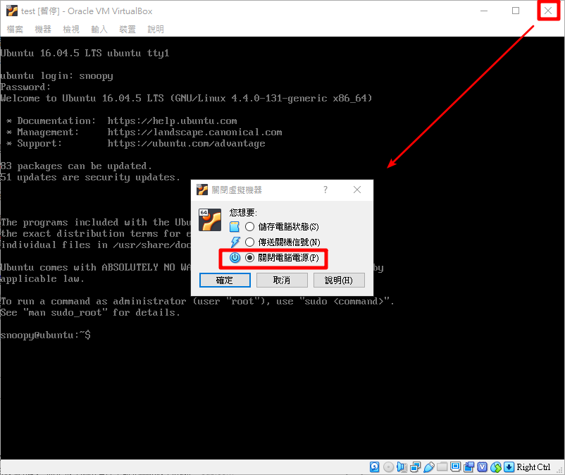
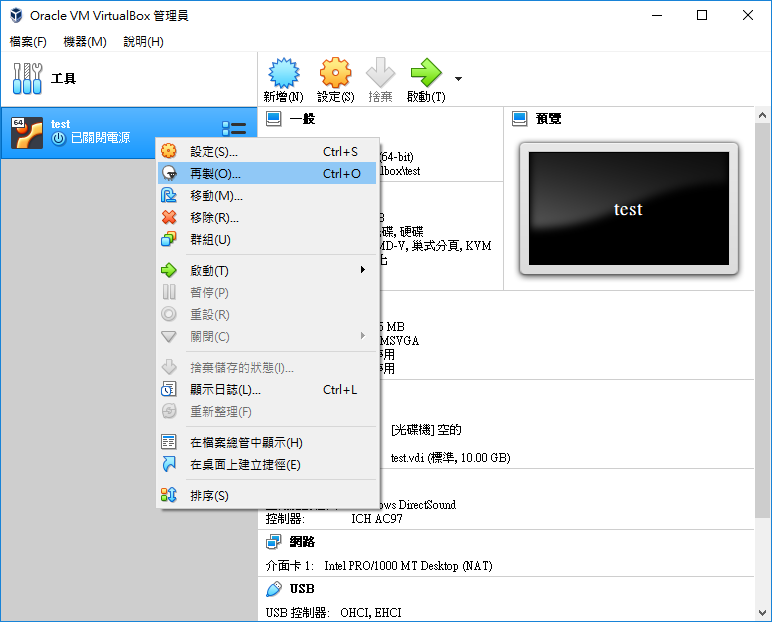
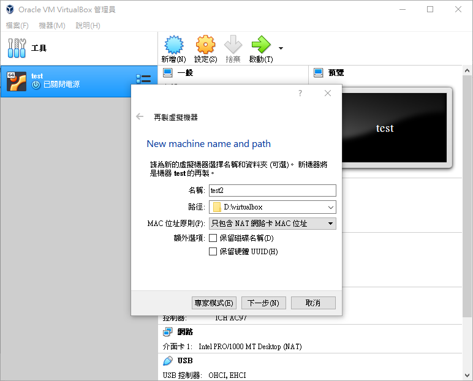
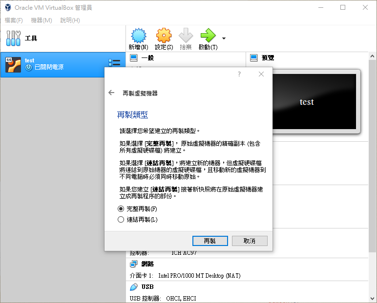
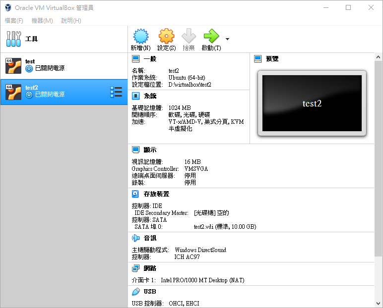

VirtualBox複製已經建立好虛擬機 發表於 2018-06-30 更新於 2020-07-30 分類於 VirtualBox 安裝完系統之後，可以再製一個新的虛擬機器，如果你不小心把系統弄壞，或想要在使用新的系統環境時，就不用再重新安裝新的系統了，這會方便及省下一些時間 1. 先將虛擬機關機，點擊右上 X 選擇機器關機，或下指令 sudo shutdown -h now ( sudo poweroff ) 2. 機器列表上右鍵 → 再製 3. 重新命名，其他選項預設 4. 選擇完整再製 5. 讀條跑完，下圖可以看到成功再製